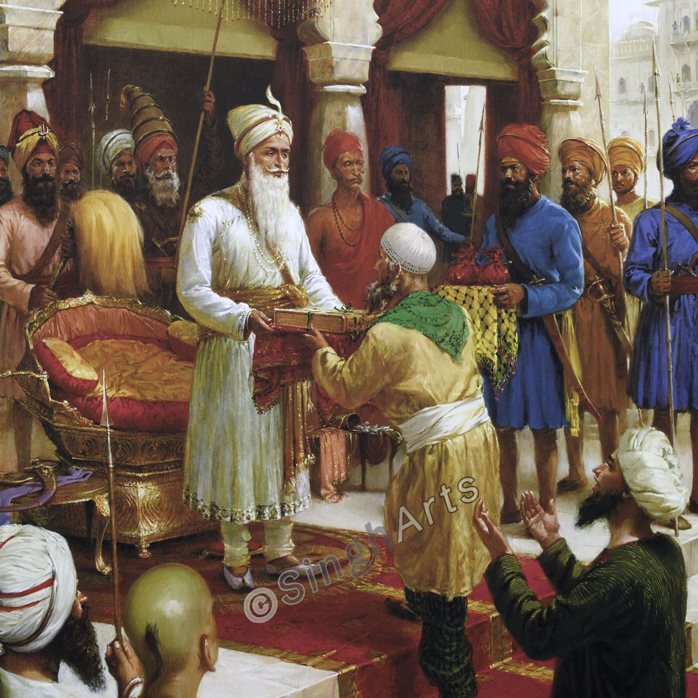
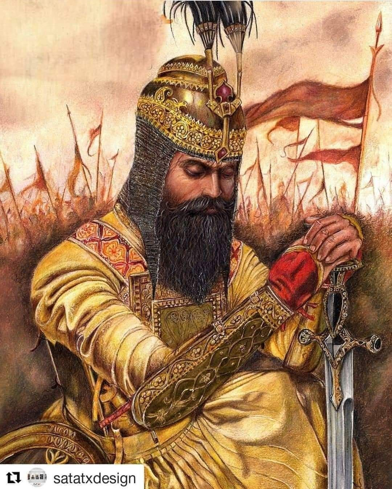

Who Was Maharaja Ranjit Singh Ji?
Maharaja Ranjit Singh Ji (1780–1839) was the founder and leader of the Sikh Empire in the early 19th century. He united the warring misls of Punjab and built a powerful, secular, and modern empire based on justice, equality, and strength. Known as the “Sher-e-Punjab” (Lion of Punjab), his rule was marked by religious tolerance, military excellence, and cultural growth.

Early Life & Background
Ranjit Singh Ji was born on November 13, 1780, in Gujranwala (now in Pakistan). He was the son of Sardar Maha Singh, leader of the Sukerchakia Misl. Despite suffering from smallpox at an early age which left him blind in one eye, he trained in horse riding, swordsmanship, and leadership from a young age. He became the chief of the misl at age 12 after his father’s death.
Unifying the Sikh Misls
By the age of 21, Ranjit Singh Ji had successfully united many of the Sikh misls (confederacies) into a single empire. He captured Lahore in 1799 and made it the capital of the Sikh Empire. His leadership brought peace and stability to a land torn by years of internal conflict and foreign invasions.

Secular and Just Rule
Maharaja Ranjit Singh Ji is remembered for his inclusive and secular governance. Hindus, Muslims, and Christians held important positions in his court. He never forced religion and gave immense respect to all places of worship. No forced conversions or communal conflicts were reported under his reign.
Defender of the Faith
He preserved and restored Sikh religious sites, including the Harmandir Sahib (Golden Temple), which he covered with gold, giving it the name “Golden Temple.” He also funded repairs and constructions for temples and mosques, showing his deep respect for all religions.
Military Excellence
Under Maharaja Ranjit Singh Ji, the Sikh Khalsa Army was transformed into a disciplined and modern force, trained by European generals. His army successfully defended Punjab from external invasions, including those from the Afghans and British. The Sikh Empire remained the last major independent kingdom before British annexation.
Connection to the Ten Sikh Gurus
- Guru Nanak Dev Ji: Followed principles of equality and service to all faiths
- Guru Angad Dev Ji: Promoted Gurmukhi and Sikh identity
- Guru Amar Das Ji: Ensured justice and dignity for women and the oppressed
- Guru Ram Das Ji: Patron of Harmandir Sahib
- Guru Arjan Dev Ji: Protected and beautified Sri Harmandir Sahib
- Guru Hargobind Ji: Emulated Miri-Piri by balancing spiritual and military strength
- Guru Har Rai Ji & Guru Har Krishan Ji: Maintained compassion and care for others
- Guru Tegh Bahadur Ji: Reflected his spirit of standing against tyranny
- Guru Gobind Singh Ji: Fulfilled the Khalsa Raj vision with courage and unity

Legacy
Maharaja Ranjit Singh Ji’s empire extended from the Khyber Pass to the Sutlej River. He maintained peace in the region for over 40 years, a remarkable achievement during a turbulent era. His legacy lives on as a model of leadership based on Sikh values — fearlessness, compassion, and equality.